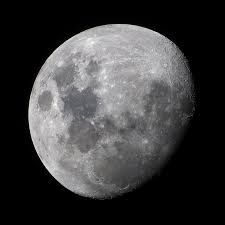

A moon is a natural object that orbits a planet. Most planets have more than one moon, but Earth only has one. On Earth, the moon is what gives the oceans their tides.
Did you know that all life on Earth has only seen one side of the moon? Since the moon is tidally locked to Earth, the time it takes for the Moon to spin on its axis is the same amount of time it takes to orbit the Earth. This means that the same exact side facts Earth as it orbits, making us only see one side. This means that the entirety of humanity has seen the exact same side.